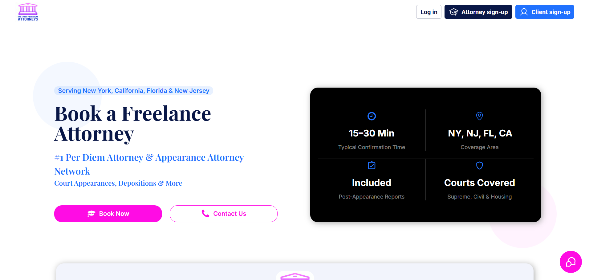
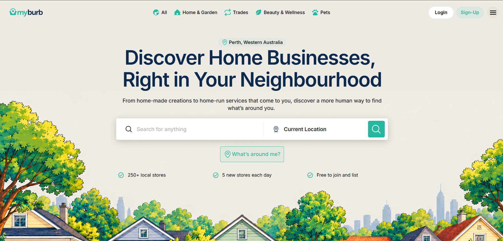
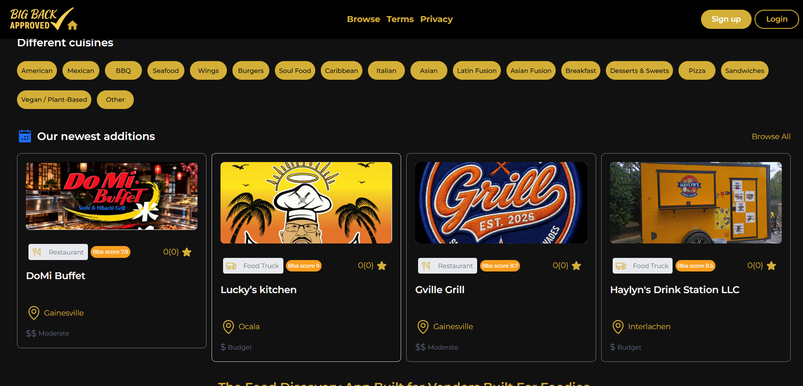
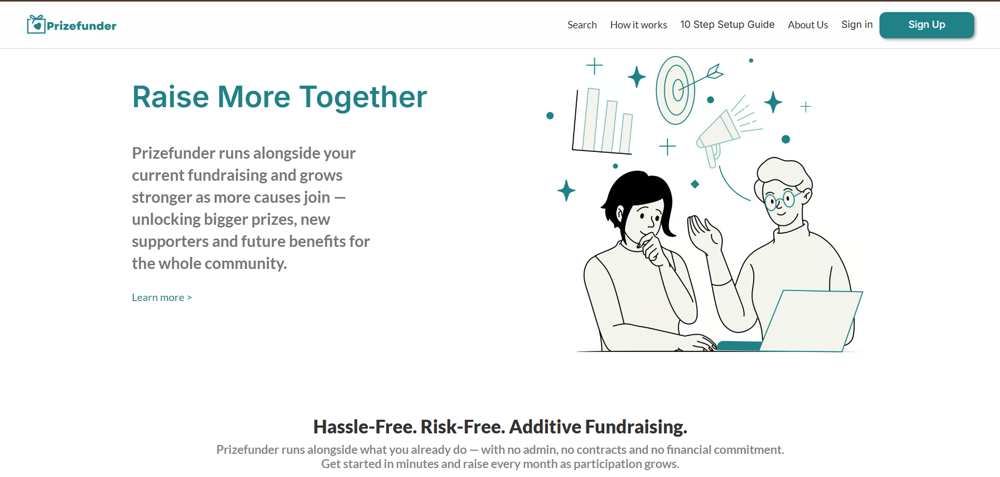

Build useful products.
Web and mobile applications shaped around real user needs.
AI & APPLICATION DEVELOPER · DEVOPS ENGINEER
I’m Damilola Omojokun. I build intelligent web and mobile applications, integrate AI to solve real-world problems, and engineer reliable infrastructure that powers modern digital experiences.
APPLICATIONS · AI · INFRASTRUCTURE
I build web and mobile applications that turn complex ideas into practical, easy-to-use tools.
My work spans application development, AI integrations, and API-driven features. I’m also developing my DevOps practice, learning to automate delivery and operate reliable cloud infrastructure.
I’m interested in scalable solutions: systems that stay useful as products grow, teams change, and real-world demands increase.
Web and mobile applications shaped around real user needs.
AI integrations and APIs that make products more capable.
Automation and infrastructure practices for dependable releases.
SKILLS I BRING TO THE WORK
A few of the ways I build across intelligent products, web, and mobile.
Web · Mobile · Applied AI
Building intelligent web and mobile applications, integrating AI to transform complex ideas into powerful digital solutions.
CLOUD · CI/CD · AUTOMATION
Engineering and automating delivery pipelines and cloud infrastructure to support reliable application releases.
✳ CORE FOCUS AREAS
APPLICATIONS · AI · DEVOPS
A closer look at application, AI, and infrastructure work across my practice.

AI-powered freelance attorney platform with intelligent job matching, real-time messaging, secure payments, and automated notifications.

Developed a scalable, AI-powered marketplace connecting buyers with local businesses through smart search, location-based discovery, secure payments, and automated workflows.

Built an AI-powered food discovery marketplace helping foodies find top-rated local food spots while enabling vendors to attract customers, increase visibility, and grow their businesses.

Developed Prizefunder, a community fundraising platform connecting supporters, local causes, and businesses to drive recurring funding and create greater local impact.
TECHNOLOGIES I WORK WITH
A practical toolkit for application development, AI integration, DevOps, and cloud infrastructure.
Web and mobile application development, from rapid prototypes to polished product experiences.
Integrate AI capabilities and services through reliable API connections.
Containerization, CI/CD, and repeatable infrastructure workflows.
Cloud foundations and Linux environments for modern applications.
OPEN TO SELECT PROJECTS
Tell me what you’re building, what needs solving, or where reliable infrastructure could help.
damiomojokun@gmail.comAI
MEETS
ENGINEERING.